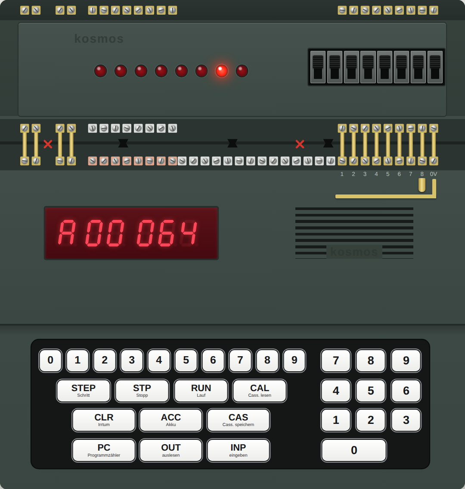
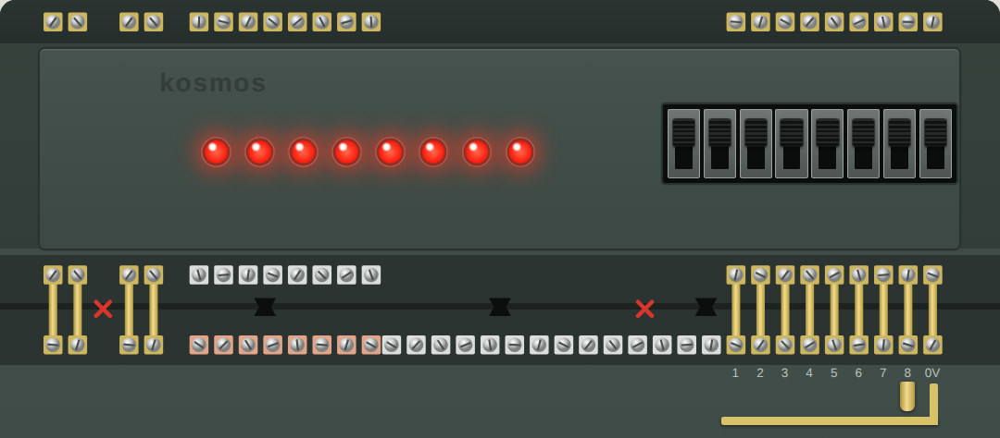

Kosmos CP1 — a programmer's guide
How to operate and program the 1983 Kosmos CP1 experimental computer, written for the browser emulator, which runs the machine's original firmware. Everything described here was tried on that firmware. This is an independent guide in its own words, not a translation of the Kosmos manual; the original German manual is on archive.org.
1. The machine
The CP1 is a small teaching computer with a six-digit display and a calculator-style keypad. You program it in decimal numbers: there is no screen, no letters and no hexadecimal. Under the hood an Intel 8049 microcontroller runs a fixed program (the firmware) that makes the box behave like a much simpler imaginary computer. That simple computer is what you program, and it has just four parts worth knowing.

- Memory. 256 numbered cells, 000 to 255 (128 in the basic machine, 256 with the memory expansion, which the emulator
has fitted). A cell holds five digits, written as two plus three:
04.200. Program and data share the same cells. - The Akku (accumulator). The one working register. Almost every instruction either puts something into the Akku, takes something out of it, or changes it.
- The program counter. The number of the cell that will be carried out next.
- Ports. The base unit has two: Port 1 and Port 2, eight lines each, on screw terminals along its top edge. The memory expansion adds three more, Ports 3, 4 and 5 (see below).
The add-on modules
The CP1 was a base unit plus modules that stack onto it and connect through its terminals:
| Module | What it adds | In the emulator |
|---|---|---|
| CP2 cassette interface | Saving and loading programs on an audio cassette (keys CAS and CAL). | Not emulated; use the Save and Open buttons. |
| CP3 memory expansion | Cells 128–255, and a second memory and port chip that provides Port 3 (an input, instruction 22, P3E) and Ports 4 and 5 (outputs, instructions 23 and 24, P4A and P5A). These instructions are part of the base firmware; the module supplies the hardware they talk to. | Fitted. The extra cells work; Port 4 drives a tone generator (section 7); Ports 3 and 5 are present for the firmware but connected to nothing. |
| CP5 input/output module | Eight switches on Port 1 and eight LEDs on Port 2, so programs can be tried without wiring anything. It uses the existing ports; it does not add new ones. | Fitted, drawn above the computer. |
The emulator also provides, as options, the simple add-ons the manual builds from loose parts: contact clips as push buttons on Port 1, lamps on the Port 1 terminals, the "random-number" cross-wiring from Port 2 to Port 1, and tone generators on the Port 2 lines (section 5, section 7).
Instructions and numbers look the same
A cell's five digits are read as instruction code (two digits) and operand (three digits). 04.200 means
instruction 04 with operand 200. A plain number is simply a cell whose first two digits are 00: 00.017 is the number 17.
Numbers range from 0 to 255. There are no negative numbers and no fractions; a calculation that leaves this range stops the
program with an error.
2. Operating it
When switched on, the display shows P 000: the program counter is at cell 000. The letter at the left always tells you what you are looking at.
| Display | Meaning |
|---|---|
| P 012 | the program counter: the next cell to run is 012 |
| E04042 | entry: this is what you just stored (or, as E 012, where the next entry will go) |
| C04042 | the contents of a cell you asked to see |
| A00042 | the Akku |
| F 006 | an error (Fehler); see section 8 |
| 123 | digits you are typing, not yet used |
The keys
| Keys | What happens |
|---|---|
| three digits, INP | Sets where entries will be stored. 0 1 2 INP shows E 012. |
| five digits, INP | Stores the five digits in that cell and moves on to the next cell, so a program is typed as one line after another. |
| three digits, OUT | Shows the contents of that cell. |
| OUT alone | Shows the next cell; press it repeatedly to read a program back. |
| 9 OUT | Shows the entry pointer: the cell the next INP will fill, e.g. C 023. Use it whenever you have lost track of where you are typing. |
| three digits, PC | Sets the program counter: where RUN will start. |
| PC alone | Shows the program counter. |
| RUN | Runs the program from the program counter. |
| STP | Stops a running program. RUN continues where it stopped. |
| STEP | Carries out one instruction and stops; the display shows the new program counter. |
| ACC | Shows the Akku. |
| CLR | Clears what you have typed, or an error display. |
| CAS, CAL | Save to and load from cassette. Not available in the emulator; use its Save and Open buttons. |
In the emulator you can skip the typing: pick a program and press Load & run, or click a line in the Inside panel and edit the cell directly. Switching the machine off and on (the Esc key) clears all cells, as it does on the real one.
3. The instructions
There are 24 instructions, all of them built into the CP1's own firmware; the add-on modules bring no new ones. Instructions 22 to 24 address Ports 3 to 5 and so are only useful with the CP3 memory expansion fitted. Each has a two-digit code and a three-letter name; the names are abbreviations of German words, given in the last column. "Cell n" means the cell whose number is the operand.
| Code | Name | What it does | From |
|---|---|---|---|
| 01.000 | HLT | Stop. The display shows the program counter. | Halt |
| 02.000 | ANZ | Show the Akku on the display. | Anzeigen (display) |
| 03.nnn | VZG | Wait n milliseconds (1–255). | Verzögern (delay) |
| 04.nnn | AKO | Put the number n itself into the Akku. | Akku, Konstante (constant) |
| 05.nnn | LDA | Copy cell n into the Akku. | Laden (load) |
| 06.nnn | ABS | Copy the Akku into cell n. | Abspeichern (store) |
| 07.nnn | ADD | Add cell n to the Akku. | Addieren |
| 08.nnn | SUB | Subtract cell n from the Akku. | Subtrahieren |
| 09.nnn | SPU | Jump: continue at cell n. | Sprung, unbedingt (unconditional) |
| 10.nnn | VGL | Compare: is the Akku equal to cell n? | Vergleich, gleich |
| 11.nnn | SPB | Jump to cell n if the last comparison was true; otherwise carry on. | Sprung, bedingt (conditional) |
| 12.nnn | VGR | Compare: is the Akku greater than cell n? | Vergleich, größer |
| 13.nnn | VKL | Compare: is the Akku less than cell n? | Vergleich, kleiner |
| 14.000 | NEG | Turn a 0 in the Akku into 1 and a 1 into 0. | Negieren |
| 15.nnn | UND | Logical AND: the Akku becomes 1 only if both it and cell n are 1. | Und (and) |
| 16.00n | P1E | Read Port 1 into the Akku. n = 0: all eight lines as one number; 1–8: that line alone, as 0 or 1. | Port 1, Eingabe (input) |
| 17.00n | P1A | Write the Akku to Port 1. n = 0: all lines; 1–8: that line alone. | Port 1, Ausgabe (output) |
| 18.00n | P2A | Write the Akku to Port 2, in the same two ways. | Port 2, Ausgabe |
| 19.nnn | LIA | Load indirectly: cell n holds an address; copy the cell at that address into the Akku. | Laden, indirekt |
| 20.nnn | AIS | Store indirectly: copy the Akku into the cell whose address is in cell n. | Akku indirekt speichern |
| 21.nnn | SIU | Jump indirectly: continue at the address held in cell n. | Sprung, indirekt |
| 22–24 | P3E, P4A, P5A | Read Port 3, write Port 4 and Port 5. These ports are on the CP3 memory expansion. In the emulator P4A drives the tone generator (section 7). |
Things worth knowing
- AKO versus LDA.
04.007puts the number 7 into the Akku.05.007puts whatever is in cell 007 into the Akku. Mixing them up is the classic first mistake. - Arithmetic is on plain numbers only. ADD and SUB need a plain number (a cell starting with 00) on both sides, and the result must lie between 0 and 255. Adding 100 to 200 or taking 9 from 5 stops the program with F 006.
- Comparing does not change the Akku. VGL, VGR and VKL only remember "true" or "false" for a following SPB. An SPB without a comparison before it does not jump.
- LDA and ABS move the whole cell, all five digits, so a program can copy instructions as well as numbers.
- NEG and UND work on 0 and 1 only. Anything else in the Akku gives F 005.
- After HLT the display shows the program counter, not your result. Press ACC to see the Akku, or end the program with a jump to itself so the last ANZ stays on the display.
4. First programs
Each program below is in the emulator's library under "Examples from the guide". The lines are written as the address, the name of the instruction, and the five digits you would type.
Show a number
000 AKO 04.042 Akku := 42 001 ANZ 02.000 show the Akku 002 SPU 09.002 jump to this same line: stay here
Run it and the display shows A00042. The last line is a loop on the spot; STP gets you out. Try it
Add two numbers
000 LDA 05.010 Akku := cell 010 001 ADD 07.011 Akku := Akku + cell 011 002 ABS 06.012 keep the sum in cell 012 003 ANZ 02.000 004 SPU 09.004 010 00.017 the first number 011 00.025 the second number
Data lives in cells of its own, here 010 to 012, well away from the program. The display shows 42. Change cell 010 or 011 and run it again. Try it
A loop with an end: count to ten
000 AKO 04.000 001 ABS 06.020 counter := 0 002 LDA 05.020 003 ANZ 02.000 show the counter 004 VZG 03.250 wait a quarter of a second 005 VGL 10.021 is the counter equal to the limit? 006 SPB 11.010 yes: leave the loop 007 ADD 07.022 no: counter := counter + 1 008 ABS 06.020 009 SPU 09.002 round again 010 SPU 09.010 finished 021 00.010 the limit 022 00.001 the step
This is the pattern for every loop on the CP1: do the work, compare, jump out if done, otherwise change the counter and jump back. There is no "add 1" instruction, so the 1 has to sit in a cell. Without the VZG the count would flash by too fast to read. Try it
Multiplying
The CP1 can only add and subtract. To multiply 12 by 9 you add 12 nine times, counting down as you go. The library program "Multiplying by repeated addition" does exactly that and shows the running total: 12, 24, 36 … 108. Division works the other way round, by subtracting and counting how often it fits. Try it
5. Ports: inputs and outputs
The ports of the base unit are rows of screw terminals along the top edge of the computer. Ports 1 and 2 have eight lines each, numbered 1 to 8. A line is either at 5 volts, which the computer calls 1, or at 0 volts, which it calls 0.

Eight lines make one number
Read or written all together, the eight lines form a binary number: line 1 counts 1, line 2 counts 2, line 3 counts 4, then 8, 16, 32, 64 and line 8 counts 128. All eight lines at 1 make 255. That is why 255 is the largest number the CP1 knows.
Port 1: inputs
16.000 (P1E) reads all eight lines into the Akku as one number. 16.003 reads line 3 alone and gives 0 or 1.
A line with nothing connected reads 1. To make it 0 you connect it to the 0 V terminal. The emulator offers two ways:
- The switches on the module. Up is 1, down is 0, and a switch stays where you put it.
- Contact clips. A springy brass clip screwed to a terminal, hanging over a rail connected to 0 V, makes a push button: press it and the line is 0, let go and it is 1 again. In the Ports panel you choose which lines have a clip; click a clip, or hold Shift and the line's number.
Port 1 can also be written, with 17.00n (P1A). The emulator can show small lamps on its terminals for programs that do so.
Port 2: outputs
18.000 (P2A) puts the Akku on all eight lines; the LEDs show it in binary. 18.003 sets line 3 alone from an Akku of 0 or 1.
After switching on, all Port 2 lines are at 1, so all LEDs are lit.
Echo: switches to LEDs
000 P1E 16.000 Akku := the switches 001 P2A 18.000 LEDs := Akku 002 ANZ 02.000 and show the number 003 SPU 09.000
Flip switches and watch the LEDs and the number follow. Try it
A running light
One lit LED walking along Port 2 means the values 1, 2, 4, 8 … 128. Doubling is adding a number to itself, so no multiplication is needed: load the value, add the same cell again, store it. At 128 the program starts over. Try it
A push button
004 P1E 16.008 Akku := line 8 (1 = open, 0 = pressed) 005 VGL 10.021 still 1? (cell 021 holds 1) 006 SPB 11.004 yes: keep waiting
That loop waits for a press. The library program "Counting button presses" then adds one to a counter and waits in a second loop until the button is released again. Without that second wait, one press would be counted hundreds of times. Try it
Scrambled numbers
The CP1 has no random-number instruction. A well-known trick is to wire the eight Port 2 lines to the eight Port 1 lines in a mixed-up order. A program then writes a counter to Port 2 and reads it straight back from Port 1 with its bits shuffled: 1, 2, 3, 4 come back as 4, 8, 12, 2. The emulator has this as a checkbox, "Wire Port 2 to Port 1", with the order of the wires editable. Try it
6. Indirect addressing
Normally an instruction names the cell it works on. LIA, AIS and SIU instead name a cell that contains the number of the cell to use. That one step of indirection is what makes tables, stacks and subroutines possible, because a program can calculate an address.
Walking through a table
004 LIA 19.030 Akku := the cell that cell 030 points at 005 ADD 07.031 006 ABS 06.031 sum := sum + that number 007 LDA 05.030 008 ADD 07.032 (cell 032 holds 1) 009 ABS 06.030 pointer := pointer + 1
Cell 030 is the pointer. It starts at 040, the first table entry, and is moved on by one each round, so the same three instructions visit 040, 041, 042 and so on. The full program adds up five numbers and shows 75. Try it
Subroutines
There is no call instruction. The convention is: before jumping to a subroutine, put the address you want to return to in an agreed cell; the subroutine ends with SIU on that cell.
000 AKO 04.003 the address to come back to 001 ABS 06.050 ... goes into cell 050 002 SPU 09.030 jump to the subroutine 003 ... execution continues here afterwards 030 ... the subroutine 036 SIU 21.050 return: jump to the address in cell 050
Note the AKO: the return address is a constant, the number 3, not the contents of cell 003. A subroutine that calls another one needs a second return cell, or a stack built with AIS and LIA, which is how the recursive Towers of Hanoi in the library works. Try it
7. Sound
Programs make sound by switching tone generators connected to a port. The emulator provides two arrangements.
- A tone generator on Port 4.
23.000(P4A) writes the Akku to Port 4. 0 is silence; in the emulator 1 is middle C and each step up is a semitone higher, so 1 to 13 is one octave. This pitch mapping is the emulator's own choice. Programs: "Sound: scale" and "Sound: melody". Try the scale - One tone per Port 2 line. With the option "Tone generators on Port 2", line 1 sounds c, line 2 d, then e, f, g, a, b and line 8 the c above. Several lines at once give a chord. "Sound: switch piano" turns the eight Port 1 switches into keys this way. Try the piano
A melody is just a table of notes played through with LIA, a VZG for the length of each note, and a silence between notes so that two equal notes can be told apart. The Sound off button silences whatever is sounding.
8. Error codes
When something goes wrong the computer stops and shows F 00n. CLR clears the display; PC shows where it stopped.
| Code | Cause | Typical case |
|---|---|---|
| F 001 | Wrong number of digits for the key pressed. | Two digits and PC; six digits; one digit and RUN. |
| F 002 | The cell to be run is not an instruction. | Running into an empty cell or into data, often after a wrong jump or a missing HLT. |
| F 003 | An address beyond the memory fitted. | Cell 200 on a machine without the memory expansion. |
| F 004 | Something that cannot be stored or addressed. | An instruction code above 24, an operand above 255, an address above 255. |
| F 005 | A value that does not fit the instruction. | Arithmetic on a cell that holds an instruction; NEG or UND on something other than 0 or 1; a port line number above 8. |
| F 006 | A result outside 0–255. | ADD going above 255, SUB going below 0. |
| F 007 | Cassette loading failed. | Does not occur in the emulator. |
9. Built-in demos
Two small programs are part of the firmware and need nothing entered:
- 9 RUN: a countdown. The display runs from 999999 through 888888 down to 000000.
- 8 RUN: a reaction test. After a pause a number races up from 0 towards 255, about one count per millisecond; STP freezes it. The pause gets longer each time you run it.
10. About the emulator
The emulator runs the CP1's original 8049 firmware, with the two 8155 memory and port chips, the display and the keypad modelled around it. What it adds for convenience:
- Programs: a library, loading and saving program files, and Load & run. Loading a program also sets up the wiring it needs.
- Inside: the program counter, the Akku, the ports line by line, and all 256 cells with their instruction names; click a cell to change it.
- Speed: slower or faster than the original.
- PC keyboard: digits, Enter or I for INP, O OUT, P PC, A ACC, R RUN, . or H STP, T STEP, X CLR, Esc power off and on.
Program files are plain text, one cell per line: 012 ako 04.200 or just 012 04.200; text after # is a comment.
The emulated machine is a CP1 with the CP3 memory expansion and the CP5 input/output module (section 1). Not emulated: the CP2 cassette interface, Ports 3 and 5 (they exist but nothing is connected), and add-on circuits other than those described above.
The emulator's Inside panel shows the entry pointer as a blue line in the listing. The real machine has no such view; there, 9 OUT is how you find it.
Quick reference
| Code | Name | Effect | Code | Name | Effect |
|---|---|---|---|---|---|
| 01 | HLT | stop | 12 | VGR | Akku > cell? |
| 02 | ANZ | show Akku | 13 | VKL | Akku < cell? |
| 03 | VZG n | wait n ms | 14 | NEG | 0 ↔ 1 |
| 04 | AKO n | Akku := n | 15 | UND | Akku AND cell |
| 05 | LDA | Akku := cell | 16 | P1E n | Akku := Port 1 (line n) |
| 06 | ABS | cell := Akku | 17 | P1A n | Port 1 (line n) := Akku |
| 07 | ADD | Akku + cell | 18 | P2A n | Port 2 (line n) := Akku |
| 08 | SUB | Akku − cell | 19 | LIA | Akku := cell pointed at |
| 09 | SPU | jump | 20 | AIS | cell pointed at := Akku |
| 10 | VGL | Akku = cell? | 21 | SIU | jump to address in cell |
| 11 | SPB | jump if true | 23 | P4A | Port 4 := Akku (tone) |
Keys: address INP sets the entry position · five digits INP stores · address OUT shows a cell · 9 OUT shows the entry pointer · address PC RUN starts · STP stops · STEP single step · ACC shows the Akku · CLR clears.
Written with Claude Opus 5.5 (Claude Code) for the Kosmos CP1 emulator by Michael Wessel. The CP1, its firmware and its manual are © 1983 Franckh-Kosmos; this guide is an independent description and reproduces no text or figures from the manual.